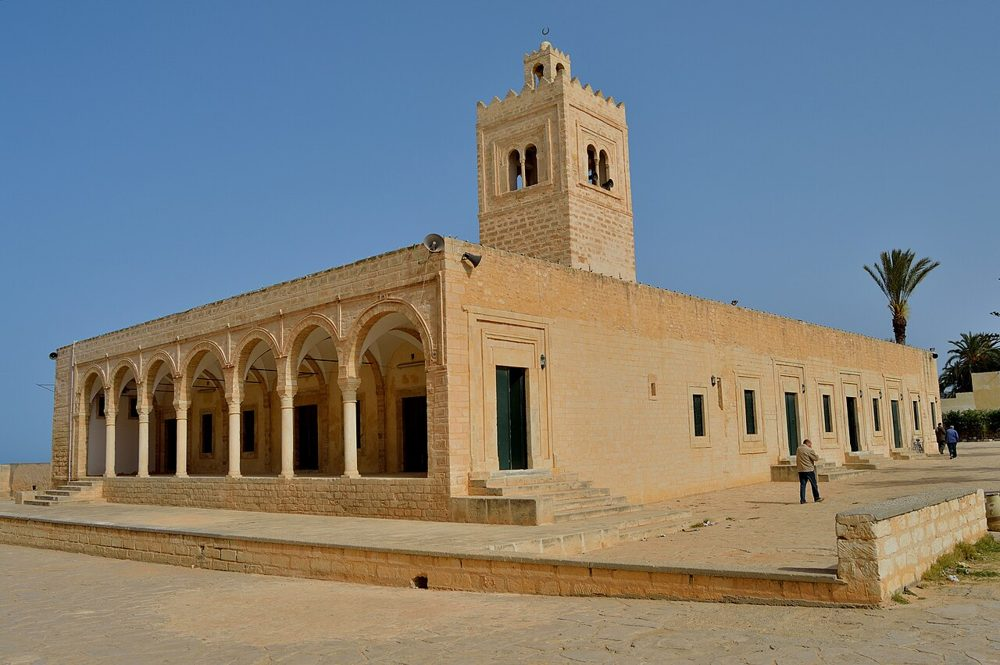
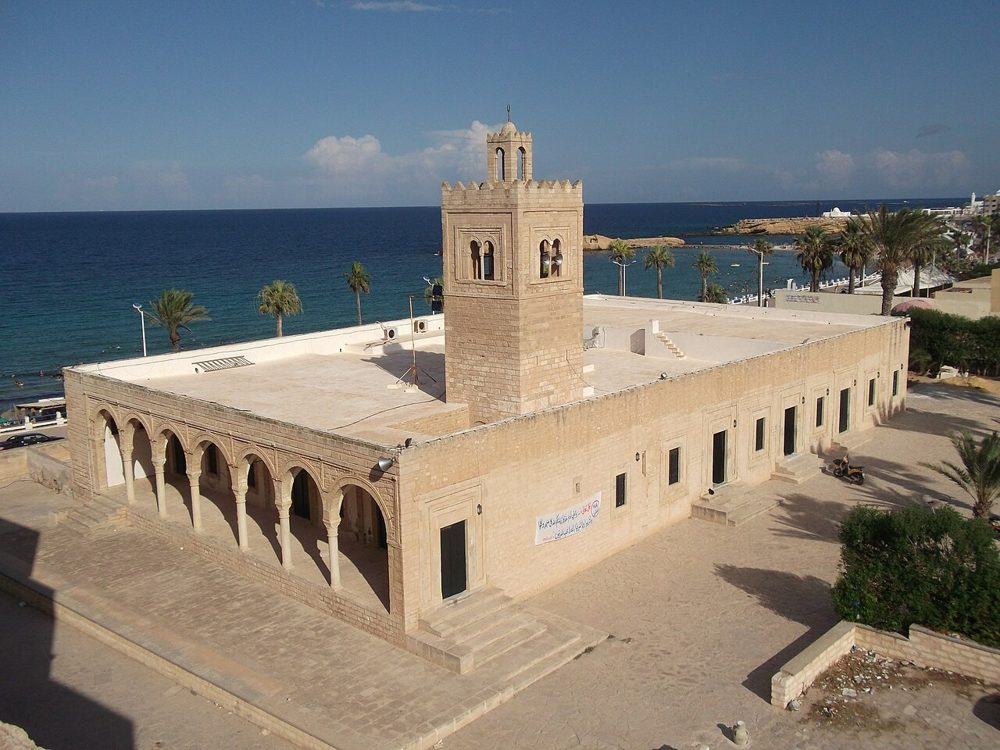

概要
海に面し、有名なリバートの隣に建つ、簡素で優美な石造りのモスクです。9 世紀以来、各時代に拡張されてきました。
写真


歴史
現在の礼拝室は 4 つの段階を経てできました。9 世紀のヴォールト天井の小さな礼拝堂、11 世紀（ズィール朝時代）のミフラーブを伴う拡張、そしてハフス朝時代の四角いミナレットと 2 つの身廊の増築です。18 世紀には外側の回廊が加えられました。2013 年 10 月、2 度の地震によりミナレットの上部が一部崩れました。
建築
切石積みの正面は、扉や窓の枠取りと回廊のアーチによって変化がつけられています。礼拝室の前に中庭はありません。ズィール朝の装飾と花模様のクーフィー体の文字をもつ 11 世紀のミフラーブには、上にドームがありません。これは中世のイフリーキヤでは珍しいことです。
主な年代
- 9 世紀ヴォールト天井の最初の礼拝堂（9 世紀）
- 11 世紀ズィール朝による拡張とミフラーブ（11 世紀）
- 18 世紀外側の回廊（18 世紀）
- 20132 度の地震のあと、ミナレットの上部が一部崩れる
物語と言い伝え
歴史的事実海辺で籠もる学者たち
9世紀のヴォールト天井の礼拝堂を持つモナスティルの大モスクは、リバートの隣にあります。リバートは海岸を見張り、礼拝も行われた要塞です。カイルアンの学者たちはここに来て籠もり、礼拝と学問と海の見張りの日々を過ごしました。
歴史的事実イマーム・マーザリーはモナスティルに眠る
最も偉大なマーリク派の学者の一人であるイマーム・マーザリー（1061〜1141年）は、マフディーヤに住み、そこで亡くなりました。それでも彼は、リバートと大モスクの町モナスティルに葬られ、その墓廟は今も人々が訪れています。スファックスのラフミーの弟子であった彼は、イマーム・ムスリムのハディース集の注釈書『ムウリム』を著しました。マーリク派の人々は彼を単に「イマーム」と呼んでいます。
出典： Wikipedia
見学
ここは何よりもまず礼拝の場です。ふさわしい服装でお越しください。礼拝室に入るときは靴を脱ぎ、礼拝の時間は避けてください。いくつかの大モスクでは、ムスリムでない訪問者は中庭には入れますが、礼拝室には入れません。開館時間は変わることがあります。現地でお確かめください。
地図上の位置
資料とリンク
出典
- 文章は、上記の資料（ウィキペディア、Qantara、Discover Islamic Art、ユネスコ）をもとに Mosquées en Tunisie が執筆し、2026 年 10 月 9 日に確認しました。
- Wikidata : Q3114981 (CC0)
- 写真：ウィキメディア・コモンズ。作者とライセンスは各写真の下に記載。
- 位置：OpenStreetMap（ODbL）および Wikidata。